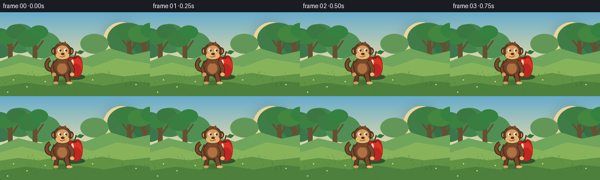
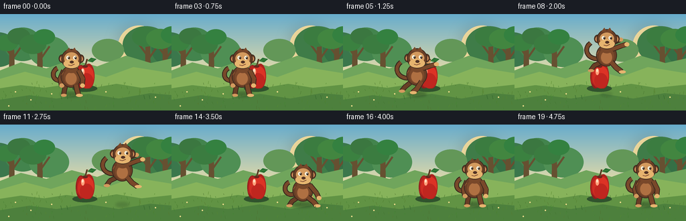

CODING AGENTS AS PIXEL WORLD MODELS
traex/GPT-5.6-Sol · dynamic_spatial_relationship_0060
点击播放 · 原生 RGB 像素
逐轮保存的候选
回放视频、检查图与代码变化。
每份候选均可单独播放。实际图片检查记录在下方工具轨迹中。
候选 01播放与检查图
点击播放 · 原生 RGB 像素


展开代码变化
--- 上一保存版本
+++ 本次保存版本
@@ -0,0 +1,217 @@
+from pathlib import Path
+import math
+import numpy as np
+from PIL import Image, ImageDraw, ImageFilter
+import artifact_io
+
+W,H,N,S = 256,144,20,4
+OUT = Path(__file__).resolve().parent
+rng = np.random.default_rng(600)
+
+def sc(v): return int(round(v*S))
+def box(b): return tuple(sc(v) for v in b)
+def pts(ps): return [(sc(x),sc(y)) for x,y in ps]
+
+def ellipse(d,b,fill,outline=None,width=1):
+ d.ellipse(box(b),fill=fill,outline=outline,width=sc(width) if outline else 1)
+def line(d,p,fill,width=1,joint='curve'):
+ d.line(pts(p),fill=fill,width=sc(width),joint=joint)
+def polygon(d,p,fill): d.polygon(pts(p),fill=fill)
+
+def bezier(p0,p1,p2,p3,n=30):
+ out=[]
+ for t in np.linspace(0,1,n):
+ u=1-t
+ out.append((u**3*p0[0]+3*u*u*t*p1[0]+3*u*t*t*p2[0]+t**3*p3[0],
+ u**3*p0[1]+3*u*u*t*p1[1]+3*u*t*t*p2[1]+t**3*p3[1]))
+ return out
+
+def background():
+ # Soft sunrise sky gradient
+ yy=np.arange(H*S)[:,None]
+ top=np.array([103,172,204.]); bot=np.array([238,223,165.])
+ t=np.clip(yy/(94*S),0,1)[...,None]
+ arr=np.tile((top*(1-t)+bot*t),(1,W*S,1)).astype(np.uint8)
+ im=Image.fromarray(arr,'RGB')
+ d=ImageDraw.Draw(im)
+ # distant sunlight haze
+ ellipse(d,(176,17,239,80),(255,232,167))
+ haze=Image.new('RGBA',im.size,(0,0,0,0)); hd=ImageDraw.Draw(haze)
+ ellipse(hd,(183,24,226,67),(255,248,200,110))
+ haze=haze.filter(ImageFilter.GaussianBlur(sc(13))); im=Image.alpha_composite(im.convert('RGBA'),haze).convert('RGB'); d=ImageDraw.Draw(im)
+ # distant orchard canopies
+ for cx,cy,rx,ry,col in [(-4,53,31,26,(59,119,76)),(34,45,28,25,(67,132,77)),(73,56,30,23,(79,143,84)),
+ (218,46,35,28,(63,124,72)),(257,52,31,27,(53,111,69)),(161,54,24,17,(99,151,88))]:
+ ellipse(d,(cx-rx,cy-ry,cx+rx,cy+ry),col)
+ # distant trunks
+ for x in [17,59,220,246]:
+ polygon(d,[(x-3,49),(x+4,48),(x+5,103),(x-4,104)],(102,80,49))
+ line(d,[(x,62),(x-14,43)],(102,80,49),3)
+ line(d,[(x+1,68),(x+15,48)],(102,80,49),3)
+ # second canopy blobs over trunks
+ for cx,cy,r in [(10,43,17),(28,33,17),(49,45,20),(66,34,16),(217,34,20),(239,37,21),(258,31,18)]:
+ ellipse(d,(cx-r,cy-r*.72,cx+r,cy+r*.72),(52+(cx%3)*7,119+(cx%4)*5,64))
+ # soft far hill and meadow
+ polygon(d,[(-5,86),(31,72),(69,81),(107,68),(145,78),(188,62),(225,73),(261,65),(261,120),(-5,120)],(112,165,92))
+ polygon(d,[(-5,98),(37,86),(76,96),(117,83),(158,94),(199,79),(261,89),(261,145),(-5,145)],(135,179,91))
+ # foreground earth
+ polygon(d,[(-2,111),(31,106),(66,110),(99,105),(139,110),(174,104),(211,110),(258,105),(258,146),(-2,146)],(97,147,68))
+ # grass shadow bands
+ polygon(d,[(-2,128),(44,121),(84,126),(132,119),(177,126),(224,118),(258,121),(258,146),(-2,146)],(77,128,61))
+ # grass strokes
+ for _ in range(115):
+ x=float(rng.uniform(0,256)); y=float(rng.uniform(104,143)); h=float(rng.uniform(1,5))
+ col=(64+int(rng.integers(0,25)),112+int(rng.integers(0,30)),48)
+ line(d,[(x,y),(x+rng.uniform(-1.5,1.5),y-h)],col,0.55)
+ # little flowers for depth
+ for x,y in [(23,116),(46,128),(77,119),(158,116),(232,124),(13,137)]:
+ ellipse(d,(x-1,y-1,x+1,y+1),(244,224,143))
+ return im
+
+BG=background()
+
+def draw_apple(im):
+ d=ImageDraw.Draw(im)
+ # grounding shadow
+ ellipse(d,(108,106,145,116),(48,83,45))
+ # red apple silhouette, centered at 127, visible behind monkey at start
+ ellipse(d,(113,76,128.5,111),(143,30,29))
+ ellipse(d,(124,74,141,111),(166,33,29))
+ polygon(d,[(115,84),(119,77),(127,79),(134,76),(140,84),(138,104),(131,111),(121,109),(114,101)],(180,36,31))
+ # shaded edge and warm main face
+ ellipse(d,(116,79,137.5,109),(208,45,35))
+ ellipse(d,(121,78,140,107),(220,51,37))
+ # central lower red blend
+ ellipse(d,(119,88,139,111),(192,38,31))
+ # highlight
+ ellipse(d,(121,81,126,91),(255,161,124))
+ ellipse(d,(122,81.5,124.5,86.5),(255,224,194))
+ # indentation, stem and leaf
+ ellipse(d,(123,76,131,80),(111,34,28))
+ line(d,[(127,78),(130,67)],(78,54,34),2.3)
+ line(d,[(128,77),(131,67)],(133,83,45),0.8)
+ polygon(d,[(130,70),(136,65),(144,67),(138,72)],(40,113,51))
+ line(d,[(131,70),(141,67)],(109,163,78),0.6)
+
+def limb(d, joints, width=6, color=(101,58,34)):
+ line(d,joints,(52,37,27),width+2)
+ line(d,joints,color,width)
+ # rounded joints
+ for x,y in joints[1:-1]: ellipse(d,(x-width/2,y-width/2,x+width/2,y+width/2),color)
+
+def draw_monkey(im,cx,base,pose,phase,scale=1.0):
+ # All coordinates are local and then scaled around cx/base.
+ d=ImageDraw.Draw(im)
+ def q(p): return (cx+p[0]*scale, base+p[1]*scale)
+ def qb(b): return (cx+b[0]*scale,base+b[1]*scale,cx+b[2]*scale,base+b[3]*scale)
+ def qline(ps,fill,w): line(d,[q(p) for p in ps],fill,w*scale)
+ fur=(104,62,38); fur2=(121,72,42); dark=(53,38,29); tan=(211,154,94); tan2=(230,180,111)
+ # Pose parameters
+ if pose=='stand':
+ body_y=-28; head_y=-53; tilt=0
+ Larm=[(-11,-37),(-16,-25),(-14,-15)]; Rarm=[(11,-37),(17,-25),(16,-15)]
+ Lleg=[(-8,-16),(-10,-7),(-11,-1)]; Rleg=[(7,-16),(9,-7),(11,-1)]
+ elif pose=='crouch':
+ body_y=-23; head_y=-44; tilt=2
+ Larm=[(-11,-31),(-18,-19),(-21,-9)]; Rarm=[(11,-31),(20,-20),(23,-12)]
+ Lleg=[(-7,-13),(-16,-7),(-19,-1)]; Rleg=[(7,-13),(16,-6),(19,-1)]
+ elif pose=='launch':
+ body_y=-27; head_y=-50; tilt=-1
+ Larm=[(-8,-37),(5,-42),(16,-46)]; Rarm=[(9,-36),(21,-40),(28,-42)]
+ Lleg=[(-7,-17),(-17,-9),(-22,-3)]; Rleg=[(7,-17),(0,-6),(-6,-1)]
+ elif pose=='fly':
+ body_y=-27; head_y=-50; tilt=-2
+ wave=math.sin(phase*math.pi)
+ Larm=[(-7,-37),(7,-44),(20,-48-wave*2)]; Rarm=[(9,-36),(22,-41),(29,-43)]
+ Lleg=[(-7,-17),(-18,-12),(-23,-5)]; Rleg=[(7,-17),(14,-9),(22,-5+wave*2)]
+ else: # landing
+ body_y=-23; head_y=-45; tilt=2
+ Larm=[(-10,-31),(1,-20),(11,-13)]; Rarm=[(10,-31),(20,-19),(23,-12)]
+ Lleg=[(-7,-13),(-16,-7),(-20,-1)]; Rleg=[(7,-13),(16,-6),(20,-1)]
+ # tail is behind body, curled left and upward, especially in flight
+ if pose in ('fly','launch'):
+ tail=bezier(q((-10,body_y+5)),q((-27,body_y+7)),q((-35,body_y-9)),q((-23,body_y-18)),22)
+ else:
+ tail=bezier(q((-11,body_y+5)),q((-27,body_y+10)),q((-30,body_y-7)),q((-20,body_y-12)),22)
+ line(d,tail,dark,7*scale); line(d,tail,fur2,4.5*scale)
+ # far limbs
+ limb(d,[q(p) for p in Lleg],5.4*scale,fur)
+ limb(d,[q(p) for p in Larm],5.0*scale,fur2)
+ # far foot/hand
+ ellipse(d,qb((Lleg[-1][0]-4,Lleg[-1][1]-2,Lleg[-1][0]+5,Lleg[-1][1]+2.2)),tan)
+ ellipse(d,qb((Larm[-1][0]-3,Larm[-1][1]-3,Larm[-1][0]+4,Larm[-1][1]+3)),tan)
+ # body outline and fur
+ ellipse(d,qb((-15,body_y-16,15,body_y+16)),fur,outline=dark,width=max(1,int(1.5*scale)))
+ ellipse(d,qb((-11,body_y-11,11,body_y+13)),fur2)
+ ellipse(d,qb((-8,body_y-6,8,body_y+12)),(175,112,66))
+ # near legs and arms
+ limb(d,[q(p) for p in Rleg],6.1*scale,fur2)
+ limb(d,[q(p) for p in Rarm],5.7*scale,fur2)
+ ellipse(d,qb((Rleg[-1][0]-4,Rleg[-1][1]-2,Rleg[-1][0]+6,Rleg[-1][1]+2.4)),tan2)
+ ellipse(d,qb((Rarm[-1][0]-3,Rarm[-1][1]-3,Rarm[-1][0]+4,Rarm[-1][1]+3)),tan2)
+ # neck
+ ellipse(d,qb((-8,head_y+8,9,head_y+20)),fur2)
+ # ears first
+ ellipse(d,qb((-18,head_y-7,-8,head_y+5)),fur,outline=dark,width=1)
+ ellipse(d,qb((-16,head_y-4,-10,head_y+3)),(211,143,91))
+ ellipse(d,qb((9,head_y-7,19,head_y+5)),fur,outline=dark,width=1)
+ ellipse(d,qb((11,head_y-4,17,head_y+3)),(211,143,91))
+ # head cap and face
+ ellipse(d,qb((-14,head_y-15,15,head_y+14)),fur,outline=dark,width=max(1,int(1.3*scale)))
+ # forehead tan mask and muzzle
+ ellipse(d,qb((-10,head_y-10,11,head_y+8)),tan)
+ ellipse(d,qb((-11,head_y,12,head_y+13)),tan2)
+ # brow tuft
+ polygon(d,[q((-8,head_y-11)),q((-3,head_y-17)),q((0,head_y-12)),q((5,head_y-17)),q((9,head_y-10))],fur2)
+ # eyes look toward right
+ ellipse(d,qb((-7,head_y-5,-2,head_y+0.5)),(251,244,222))
+ ellipse(d,qb((3,head_y-5,8,head_y+0.5)),(251,244,222))
+ ellipse(d,qb((-4.6,head_y-3.7,-1.7,head_y-0.1)),dark)
+ ellipse(d,qb((5.2,head_y-3.7,8.1,head_y-0.1)),dark)
+ ellipse(d,qb((-3.9,head_y-3.2,-3.1,head_y-2.3)),(255,255,240))
+ ellipse(d,qb((5.9,head_y-3.2,6.7,head_y-2.3)),(255,255,240))
+ # nose, friendly determined mouth
+ ellipse(d,qb((-2,head_y+2,4,head_y+6)),(83,51,37))
+ qline([(-4,head_y+8),(0,head_y+9),(5,head_y+7)],(105,53,39),0.9)
+ # small fur accents
+ qline([(-11,body_y-6),(-14,body_y-2)],(151,89,51),0.8)
+
+def frame_params(i):
+ if i<=3:
+ return 106+0.6*math.sin(i*1.4),122,'stand',0,1.03
+ if i==4: return 108,122,'crouch',0,1.03
+ # smooth jump trajectory frames 5..14
+ if 5<=i<=13:
+ u=(i-5)/8
+ x=110+(196-110)*(3*u*u-2*u*u*u)
+ lift=4+31*math.sin(math.pi*u)
+ pose='launch' if i<=6 else 'fly'
+ return x,122-lift,pose,u,1.03
+ if i==14: return 196,122,'landing',1,1.03
+ if i==15: return 196,122,'crouch',1,1.03
+ return 196+0.5*math.sin((i-16)*1.3),122,'stand',1,1.03
+
+def make_frame(i):
+ im=BG.copy()
+ d=ImageDraw.Draw(im)
+ cx,base,pose,phase,scale=frame_params(i)
+ # Monkey contact / aerial shadow conveys jump height and trajectory
+ lift=max(0,122-base)
+ sw=max(10,31-lift*.42)
+ alpha=max(35,105-int(lift*2))
+ shadow=Image.new('RGBA',im.size,(0,0,0,0)); sd=ImageDraw.Draw(shadow)
+ ellipse(sd,(cx-sw/2,116,cx+sw/2,123),(29,54,28,alpha))
+ shadow=shadow.filter(ImageFilter.GaussianBlur(sc(2.0)))
+ im=Image.alpha_composite(im.convert('RGBA'),shadow).convert('RGB')
+ # Stationary apple is always behind the monkey when they overlap.
+ draw_apple(im)
+ draw_monkey(im,cx,base,pose,phase,scale)
+ # subtle foreground grass blades overlap feet for grounding
+ d=ImageDraw.Draw(im)
+ for x in [92,101,216,224]:
+ line(d,[(x,127),(x-1.5,121)],(54,105,47),0.7)
+ return np.asarray(im.resize((W,H),Image.Resampling.LANCZOS).convert('RGB'),dtype=np.uint8)
+
+frames=np.stack([make_frame(i) for i in range(N)],axis=0)
+artifact_io.save(frames,OUT)
+print('saved',frames.shape,frames.dtype)
可观测工具轨迹
实际执行的命令与返回图片。
命令 1exit 0
/bin/bash -lc "find . -maxdepth 2 -type f -printf '%p %s bytes\\n' | sort"
命令 2exit 0
/bin/bash -lc "cat prompt.txt && printf '\\n---RULES---\\n' && cat GENERATION_RULES.md && printf '\\n---SPEC---\\n' && cat task_spec.json"
命令 3exit 0
/bin/bash -lc "sed -n '1,240p' artifact_io.py"
命令 4exit 0
/bin/bash -lc "cat > generate.py <<'PY'
from pathlib import Path
import math
import numpy as np
from PIL import Image, ImageDraw, ImageFilter
import artifact_io
W,H,N,S = 256,144,20,4
OUT = Path(__file__).resolve().parent
rng = np.random.default_rng(600)
def sc(v): return int(round(v*S))
def box(b): return tuple(sc(v) for v in b)
def pts(ps): return [(sc(x),sc(y)) for x,y in ps]
def ellipse(d,b,fill,outline=None,width=1):
d.ellipse(box(b),fill=fill,outline=outline,width=sc(width) if outline else 1)
def line(d,p,fill,width=1,joint='curve'):
d.line(pts(p),fill=fill,width=sc(width),joint=joint)
def polygon(d,p,fill): d.polygon(pts(p),fill=fill)
def bezier(p0,p1,p2,p3,n=30):
out=[]
for t in np.linspace(0,1,n):
u=1-t
out.append((u**3*p0[0]+3*u*u*t*p1[0]+3*u*t*t*p2[0]+t**3*p3[0],
u**3*p0[1]+3*u*u*t*p1[1]+3*u*t*t*p2[1]+t**3*p3[1]))
return out
def background():
# Soft sunrise sky gradient
yy=np.arange(H*S)[:,None]
top=np.array([103,172,204.]); bot=np.array([238,223,165.])
t=np.clip(yy/(94*S),0,1)[...,None]
arr=np.tile((top*(1-t)+bot*t),(1,W*S,1)).astype(np.uint8)
im=Image.fromarray(arr,'RGB')
d=ImageDraw.Draw(im)
# distant sunlight haze
ellipse(d,(176,17,239,80),(255,232,167))
haze=Image.new('RGBA',im.size,(0,0,0,0)); hd=ImageDraw.Draw(haze)
ellipse(hd,(183,24,226,67),(255,248,200,110))
haze=haze.filter(ImageFilter.GaussianBlur(sc(13))); im=Image.alpha_composite(im.convert('RGBA'),haze).convert('RGB'); d=ImageDraw.Draw(im)
# distant orchard canopies
for cx,cy,rx,ry,col in [(-4,53,31,26,(59,119,76)),(34,45,28,25,(67,132,77)),(73,56,30,23,(79,143,84)),
(218,46,35,28,(63,124,72)),(257,52,31,27,(53,111,69)),(161,54,24,17,(99,151,88))]:
ellipse(d,(cx-rx,cy-ry,cx+rx,cy+ry),col)
# distant trunks
for x in [17,59,220,246]:
polygon(d,[(x-3,49),(x+4,48),(x+5,103),(x-4,104)],(102,80,49))
line(d,[(x,62),(x-14,43)],(102,80,49),3)
line(d,[(x+1,68),(x+15,48)],(102,80,49),3)
# second canopy blobs over trunks
for cx,cy,r in [(10,43,17),(28,33,17),(49,45,20),(66,34,16),(217,34,20),(239,37,21),(258,31,18)]:
ellipse(d,(cx-r,cy-r*.72,cx+r,cy+r*.72),(52+(cx%3)*7,119+(cx%4)*5,64))
# soft far hill and meadow
polygon(d,[(-5,86),(31,72),(69,81),(107,68),(145,78),(188,62),(225,73),(261,65),(261,120),(-5,120)],(112,165,92))
polygon(d,[(-5,98),(37,86),(76,96),(117,83),(158,94),(199,79),(261,89),(261,145),(-5,145)],(135,179,91))
# foreground earth
polygon(d,[(-2,111),(31,106),(66,110),(99,105),(139,110),(174,104),(211,110),(258,105),(258,146),(-2,146)],(97,147,68))
# grass shadow bands
polygon(d,[(-2,128),(44,121),(84,126),(132,119),(177,126),(224,118),(258,121),(258,146),(-2,146)],(77,128,61))
# grass strokes
for _ in range(115):
x=float(rng.uniform(0,256)); y=float(rng.uniform(104,143)); h=float(rng.uniform(1,5))
col=(64+int(rng.integers(0,25)),112+int(rng.integers(0,30)),48)
line(d,[(x,y),(x+rng.uniform(-1.5,1.5),y-h)],col,0.55)
# little flowers for depth
for x,y in [(23,116),(46,128),(77,119),(158,116),(232,124),(13,137)]:
ellipse(d,(x-1,y-1,x+1,y+1),(244,224,143))
return im
BG=background()
def draw_apple(im):
d=ImageDraw.Draw(im)
# grounding shadow
ellipse(d,(108,106,145,116),(48,83,45))
# red apple silhouette, centered at 127, visible behind monkey at start
ellipse(d,(113,76,128.5,111),(143,30,29))
ellipse(d,(124,74,141,111),(166,33,29))
polygon(d,[(115,84),(119,77),(127,79),(134,76),(140,84),(138,104),(131,111),(121,109),(114,101)],(180,36,31))
# shaded edge and warm main face
ellipse(d,(116,79,137.5,109),(208,45,35))
ellipse(d,(121,78,140,107),(220,51,37))
# central lower red blend
ellipse(d,(119,88,139,111),(192,38,31))
# highlight
ellipse(d,(121,81,126,91),(255,161,124))
ellipse(d,(122,81.5,124.5,86.5),(255,224,194))
# indentation, stem and leaf
ellipse(d,(123,76,131,80),(111,34,28))
line(d,[(127,78),(130,67)],(78,54,34),2.3)
line(d,[(128,77),(131,67)],(133,83,45),0.8)
polygon(d,[(130,70),(136,65),(144,67),(138,72)],(40,113,51))
line(d,[(131,70),(141,67)],(109,163,78),0.6)
def limb(d, joints, width=6, color=(101,58,34)):
line(d,joints,(52,37,27),width+2)
line(d,joints,color,width)
# rounded joints
for x,y in joints[1:-1]: ellipse(d,(x-width/2,y-width/2,x+width/2,y+width/2),color)
def draw_monkey(im,cx,base,pose,phase,scale=1.0):
# All coordinates are local and then scaled around cx/base.
d=ImageDraw.Draw(im)
def q(p): return (cx+p[0]*scale, base+p[1]*scale)
def qb(b): return (cx+b[0]*scale,base+b[1]*scale,cx+b[2]*scale,base+b[3]*scale)
def qline(ps,fill,w): line(d,[q(p) for p in ps],fill,w*scale)
fur=(104,62,38); fur2=(121,72,42); dark=(53,38,29); tan=(211,154,94); tan2=(230,180,111)
# Pose parameters
if pose=='stand':
body_y=-28; head_y=-53; tilt=0
Larm=[(-11,-37),(-16,-25),(-14,-15)]; Rarm=[(11,-37),(17,-25),(16,-15)]
Lleg=[(-8,-16),(-10,-7),(-11,-1)]; Rleg=[(7,-16),(9,-7),(11,-1)]
elif pose=='crouch':
body_y=-23; head_y=-44; tilt=2
Larm=[(-11,-31),(-18,-19),(-21,-9)]; Rarm=[(11,-31),(20,-20),(23,-12)]
Lleg=[(-7,-13),(-16,-7),(-19,-1)]; Rleg=[(7,-13),(16,-6),(19,-1)]
elif pose=='launch':
body_y=-27; head_y=-50; tilt=-1
Larm=[(-8,-37),(5,-42),(16,-46)]; Rarm=[(9,-36),(21,-40),(28,-42)]
Lleg=[(-7,-17),(-17,-9),(-22,-3)]; Rleg=[(7,-17),(0,-6),(-6,-1)]
elif pose=='fly':
body_y=-27; head_y=-50; tilt=-2
wave=math.sin(phase*math.pi)
Larm=[(-7,-37),(7,-44),(20,-48-wave*2)]; Rarm=[(9,-36),(22,-41),(29,-43)]
Lleg=[(-7,-17),(-18,-12),(-23,-5)]; Rleg=[(7,-17),(14,-9),(22,-5+wave*2)]
else: # landing
body_y=-23; head_y=-45; tilt=2
Larm=[(-10,-31),(1,-20),(11,-13)]; Rarm=[(10,-31),(20,-19),(23,-12)]
Lleg=[(-7,-13),(-16,-7),(-20,-1)]; Rleg=[(7,-13),(16,-6),(20,-1)]
# tail is behind body, curled left and upward, especially in flight
if pose in ('fly','launch'):
tail=bezier(q((-10,body_y+5)),q((-27,body_y+7)),q((-35,body_y-9)),q((-23,body_y-18)),22)
else:
tail=bezier(q((-11,body_y+5)),q((-27,body_y+10)),q((-30,body_y-7)),q((-20,body_y-12)),22)
line(d,tail,dark,7*scale); line(d,tail,fur2,4.5*scale)
# far limbs
limb(d,[q(p) for p in Lleg],5.4*scale,fur)
limb(d,[q(p) for p in Larm],5.0*scale,fur2)
# far foot/hand
ellipse(d,qb((Lleg[-1][0]-4,Lleg[-1][1]-2,Lleg[-1][0]+5,Lleg[-1][1]+2.2)),tan)
ellipse(d,qb((Larm[-1][0]-3,Larm[-1][1]-3,Larm[-1][0]+4,Larm[-1][1]+3)),tan)
# body outline and fur
ellipse(d,qb((-15,body_y-16,15,body_y+16)),fur,outline=dark,width=max(1,int(1.5*scale)))
ellipse(d,qb((-11,body_y-11,11,body_y+13)),fur2)
ellipse(d,qb((-8,body_y-6,8,body_y+12)),(175,112,66))
# near legs and arms
limb(d,[q(p) for p in Rleg],6.1*scale,fur2)
limb(d,[q(p) for p in Rarm],5.7*scale,fur2)
ellipse(d,qb((Rleg[-1][0]-4,Rleg[-1][1]-2,Rleg[-1][0]+6,Rleg[-1][1]+2.4)),tan2)
ellipse(d,qb((Rarm[-1][0]-3,Rarm[-1][1]-3,Rarm[-1][0]+4,Rarm[-1][1]+3)),tan2)
# neck
ellipse(d,qb((-8,head_y+8,9,head_y+20)),fur2)
# ears first
ellipse(d,qb((-18,head_y-7,-8,head_y+5)),fur,outline=dark,width=1)
ellipse(d,qb((-16,head_y-4,-10,head_y+3)),(211,143,91))
ellipse(d,qb((9,head_y-7,19,head_y+5)),fur,outline=dark,width=1)
ellipse(d,qb((11,head_y-4,17,head_y+3)),(211,143,91))
# head cap and face
ellipse(d,qb((-14,head_y-15,15,head_y+14)),fur,outline=dark,width=max(1,int(1.3*scale)))
# forehead tan mask and muzzle
ellipse(d,qb((-10,head_y-10,11,head_y+8)),tan)
ellipse(d,qb((-11,head_y,12,head_y+13)),tan2)
# brow tuft
polygon(d,[q((-8,head_y-11)),q((-3,head_y-17)),q((0,head_y-12)),q((5,head_y-17)),q((9,head_y-10))],fur2)
# eyes look toward right
ellipse(d,qb((-7,head_y-5,-2,head_y+0.5)),(251,244,222))
ellipse(d,qb((3,head_y-5,8,head_y+0.5)),(251,244,222))
ellipse(d,qb((-4.6,head_y-3.7,-1.7,head_y-0.1)),dark)
ellipse(d,qb((5.2,head_y-3.7,8.1,head_y-0.1)),dark)
ellipse(d,qb((-3.9,head_y-3.2,-3.1,head_y-2.3)),(255,255,240))
ellipse(d,qb((5.9,head_y-3.2,6.7,head_y-2.3)),(255,255,240))
# nose, friendly determined mouth
ellipse(d,qb((-2,head_y+2,4,head_y+6)),(83,51,37))
qline([(-4,head_y+8),(0,head_y+9),(5,head_y+7)],(105,53,39),0.9)
# small fur accents
qline([(-11,body_y-6),(-14,body_y-2)],(151,89,51),0.8)
def frame_params(i):
if i<=3:
return 106+0.6*math.sin(i*1.4),122,'stand',0,1.03
if i==4: return 108,122,'crouch',0,1.03
# smooth jump trajectory frames 5..14
if 5<=i<=13:
u=(i-5)/8
x=110+(196-110)*(3*u*u-2*u*u*u)
lift=4+31*math.sin(math.pi*u)
pose='launch' if i<=6 else 'fly'
return x,122-lift,pose,u,1.03
if i==14: return 196,122,'landing',1,1.03
if i==15: return 196,122,'crouch',1,1.03
return 196+0.5*math.sin((i-16)*1.3),122,'stand',1,1.03
def make_frame(i):
im=BG.copy()
d=ImageDraw.Draw(im)
cx,base,pose,phase,scale=frame_params(i)
# Monkey contact / aerial shadow conveys jump height and trajectory
lift=max(0,122-base)
sw=max(10,31-lift*.42)
alpha=max(35,105-int(lift*2))
shadow=Image.new('RGBA',im.size,(0,0,0,0)); sd=ImageDraw.Draw(shadow)
ellipse(sd,(cx-sw/2,116,cx+sw/2,123),(29,54,28,alpha))
shadow=shadow.filter(ImageFilter.GaussianBlur(sc(2.0)))
im=Image.alpha_composite(im.convert('RGBA'),shadow).convert('RGB')
# Stationary apple is always behind the monkey when they overlap.
draw_apple(im)
draw_monkey(im,cx,base,pose,phase,scale)
# subtle foreground grass blades overlap feet for grounding
d=ImageDraw.Draw(im)
for x in [92,101,216,224]:
line(d,[(x,127),(x-1.5,121)],(54,105,47),0.7)
return np.asarray(im.resize((W,H),Image.Resampling.LANCZOS).convert('RGB'),dtype=np.uint8)
frames=np.stack([make_frame(i) for i in range(N)],axis=0)
artifact_io.save(frames,OUT)
print('saved',frames.shape,frames.dtype)
PY
python generate.py"命令 5exit 0
/bin/bash -lc "python - <<'PY'
import numpy as np
p=np.load('pixels.npz')['pixels']
print('pixels',p.shape,p.dtype,'range',hex(int(p.min())),hex(int(p.max())))
print('frames',len(list(__import__('pathlib').Path('frames').glob('*.png'))))
PY
ls -lh pixels.npz index.html inspection.png generate.py"视觉工具实际返回图片 1

保存候选 1 份；完成命令 5 次；可验证图片返回 1 张。原始 API 响应与完整日志保留在本地。